Übung 3.1 - Subdivision Surface Modeling
Box Modeling
Im folgenden Kapitel behandeln wir eine Modelliertechnik, die Subdivision Surface Modeling genannt wird. Es handelt sich hierbei grundsätzlich um Box-Modeling, da wir durch Extrudieren einer Box einen “Käfig” (=Control Cage) modellieren und damit ein Subdivision Surface kontrollieren (siehe Subdivision Surface Modifier).
Diese Methode ist wie das Formen von Knete (deshalb auch manchmal “Clay Modeling” genannt) und eignet sich besonders zur Erstellung organischer Modelle. Um die Arbeitsweise anschaulich zu erklären nutzen wir das Beispiel eines Drachen.
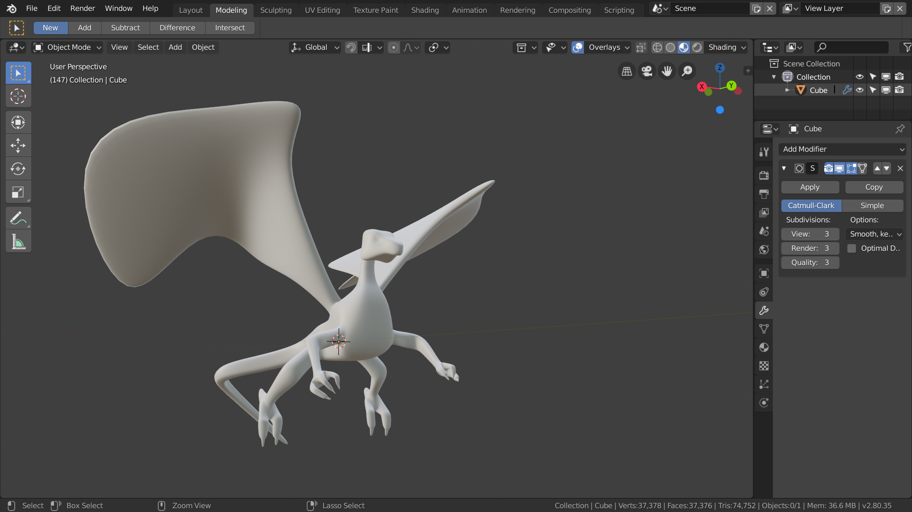
1. Vorbereitung
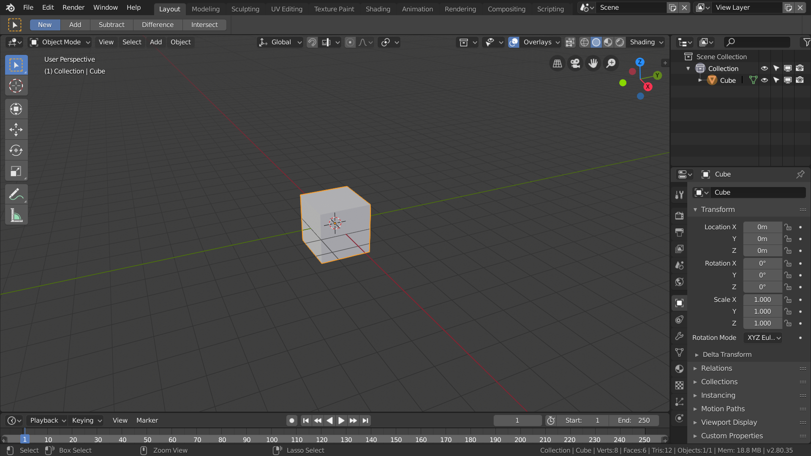
- Öffnet eine neue Blender-Szene und löscht alle Objekte bis auf den Würfel.
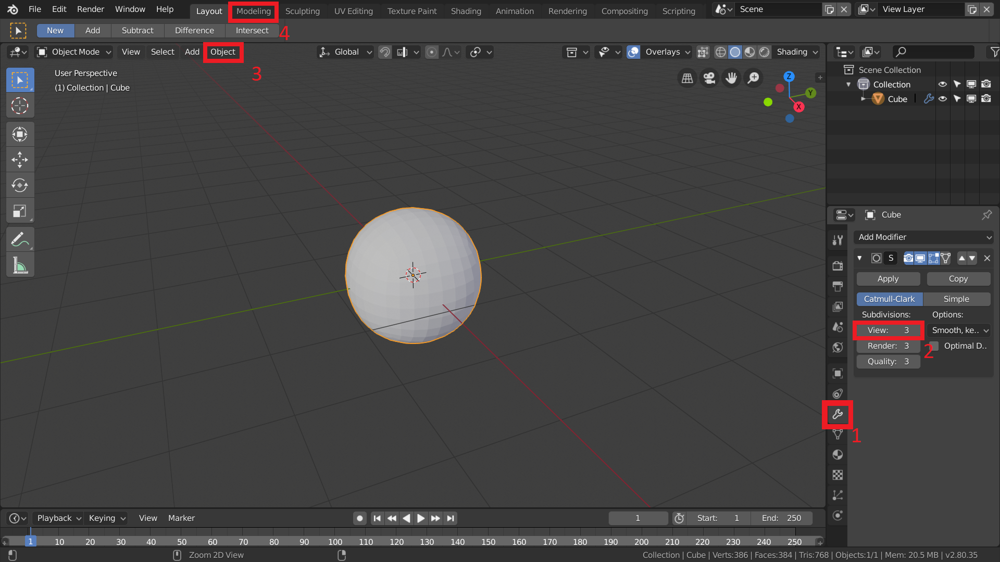
- Fügt dem Würfel über das Modifier-Panel 1 einen “Subdivision Surface” hinzu und stellt die “Subdivisions”2 auf 3.
Achtet beim Modellieren darauf, dass sich der Subdivision Surface im “Catmull-Clark”-Modus an allen Kanten orientiert. Durch Hinzufügen weiterer Edge-Loops wird das Modell kantiger. Das verändern der vorhandenen Kanten beeinflusst das Aussehen des Modells gewaltig.
- Stellt im Object-Menü 3 das “Shading"auf Smooth.
- Wechselt nun in den Modeling Workspace 4.
2. Körperform
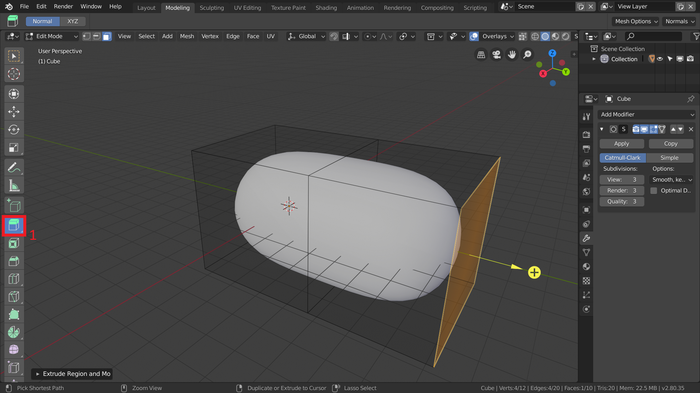
- Skaliert den Würfel zuerst größer, bis er groß genug für den Rumpf des Drachen ist.
- Zieht den Rumpf in die Länge, indem ihr mit dem Extrude-Werkzeug (1) eine Seite Extrudiert.
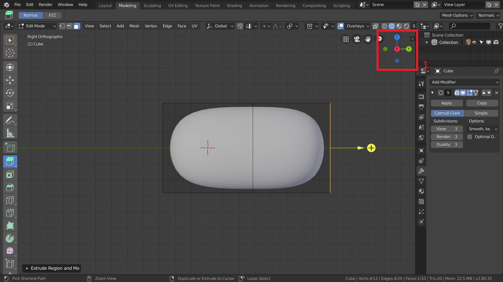
- Wechselt in die Seitenansicht indem ihr auf die passende Achse (1) drückt, oder mit de Shortcut
Num 3.
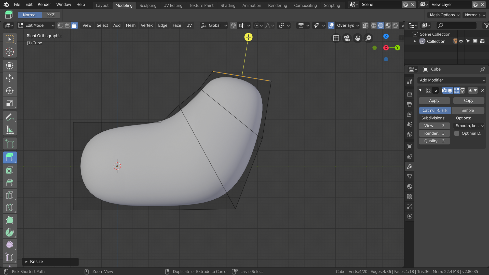
- Rotiert, Extrudiert und Skaliert nun eine Seite so, dass der Drache einen aufrechten Brustkorb bekommt, der in einen Hals übergehen kann.
3. Schwanz
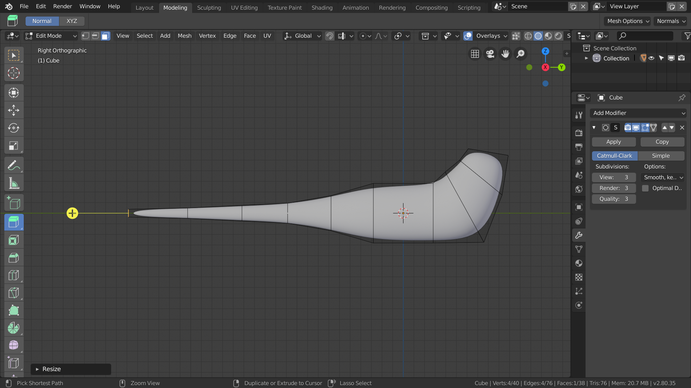
- Extrudiert auf der anderen Seite einen immer kleiner werdenenden Schwanz.
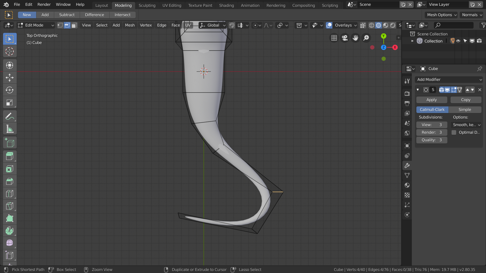
- Wechselt in die Draufsicht und sorgt durch Rotation und Verschiebung der Edge-Loops dafür, dass der Schwanz sich etwas schlängelt.
Edge-Loops sind sehr leicht auszuwählen indem ihr
Alt + Linksklickdrückt.
3. Kopf
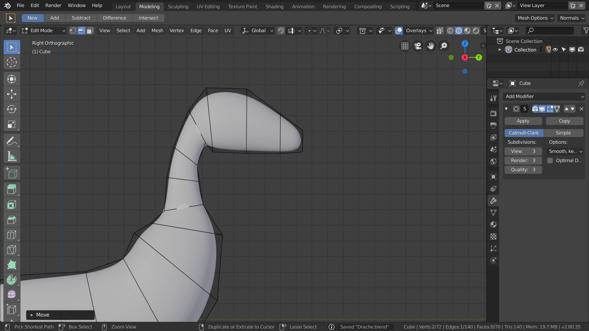
- Zurück in der Seitenansicht könnt ihr euch nun daran machen, einen groben Hals und Kopf zu modellieren.
Ihr seid nicht zwingend an die unterschiedlichen Ansichten gebunden, doch es macht das Modellieren oft einfacher in einer bestimmten Ansicht zu arbeiten.
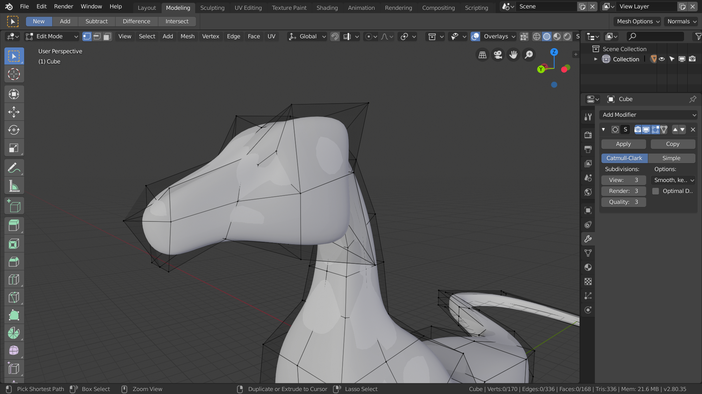
- Passt durch “Loop Cuts” und verschieben der Kanten jetzt die Proportionen des Kopfes an.
Denkt daran, dass sich Kanten auch verschieben, wenn ihr nur einen der beiden verbundenen Vertices verschiebt.
4. Beine
Da unser Drache bisher noch stark an etwas Schlangenähnliches erinnert, wird es Zeit ihm Gliedmaßen zu geben.
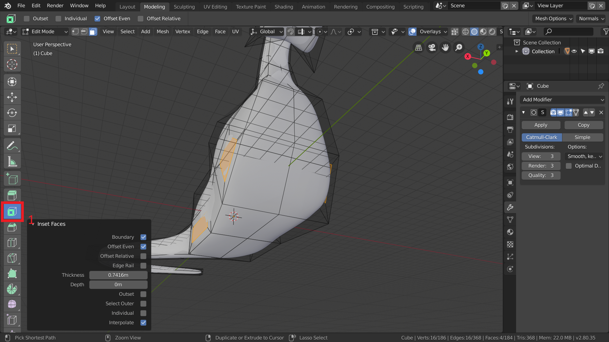
- Wählt Polygone seitlich des Körpers wo sich die Beine befinden sollen und gebt ihnen mit dem Inset Faces-Werkzeug (1) oder it dem Shortcut
Ieinen Inset.
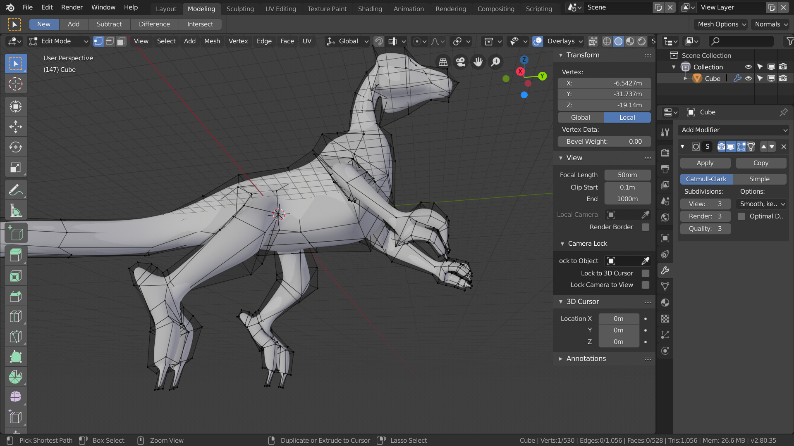
- Diese neue, kleinere Geometrie könnt ihr nun als Beine extrudieren.
5. Flügel

- Um den Drachen zu vollenden fehlen jetzt nur noch die Flügel, die ihr auf die gleiche Weise wie die Beine erstellen könnt.
Aufgabe
- Erstellt einen vollständigen Drachen mit detaillierten Klauen und Stacheln auf dem Rücken.
Ressourcen & Tutorials zum Thema
| Art/Länge | Titel | Thema | Quelle |
|---|---|---|---|
| 4:44 | Subdivision Surfaces: Overview | Suftwareunspezifische theoretische Erklärung zu Subdivisions | YouTube - GuerillaCG |
| 30:22 | Blender 2.8 Beginner Tutorial - Part 3: Organic Modeling | Modeling mit Subdivision | YouTube - CG Boost |
| 1:15 | Modeling Introduction - Blender 2.80 Fundamentals | Modeling allgemein | YouTube - Blender (offizieller Kanal) |
| 13:18 | Beginner Blender Tutorial Level 1 - Part 2: Modelling | Modeling allgemein | YouTube - Blenderguru |
Gelerntes
| Funktion | Kontext | Shortcut |
|---|---|---|
| Subdivision Surface | Box Modelling | |